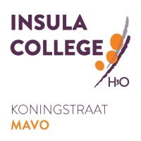

Mijn vooropleiding was op het Insula College Koningstraat. Ik vond het een leuke school. Ik heb geleerd hoe je bestanden makkelijk op te slaan door gebruik te maken van mappen. Dit kan ik aan deze opleiding toepassen als ik werk met html. De vaardigheden die ik kan gebruiken voor deze opleiding zijn het gebruik maken van een kladblok om belangrijke informatie te typen zodat ik het later terug kan vinden en een map maken dat met schoolopdrachten te maken heeft.
Helaas heb ik nooit een bijbaan gehad, dus daar kan ik niks over vertellen.